Autonomes Fahrzeug :
Projektüberblick :
Dieser Roboter ist ein selbstfahrendes Auto, das vorne mit einer Kamera ausgestattet ist, die die Ampel erkennen kann. Wenn das Licht rot ist, hält das Auto an und schaltet die Bremslichter ein. Wenn die Ampel auf grün wechselt, setzt das Auto seine Fahrt fort.
Mechanischer Aufbau :
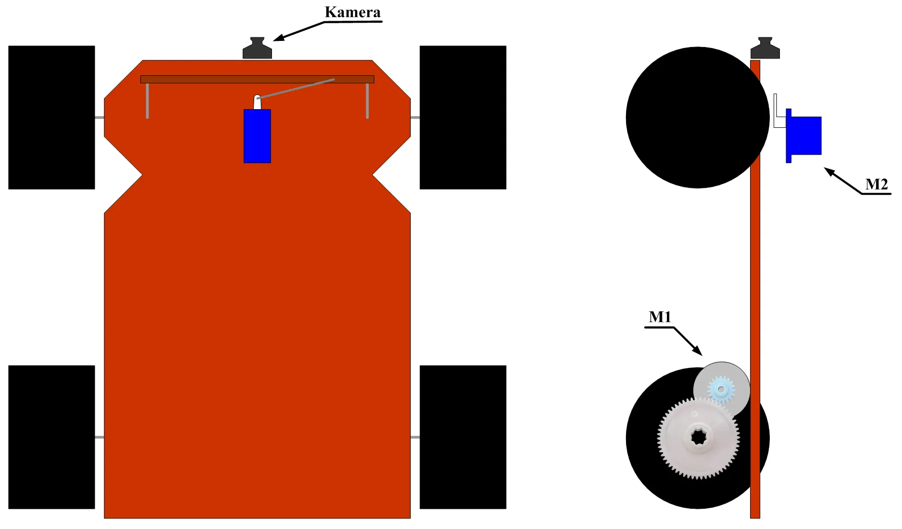
Das Auto besteht zu hundert Prozent handgefertigt aus Holz, unter Hinzufügung eines Lenksystems für die Räder nach rechts und links wie bei einem echten Auto. Zur Bewegung dieses Systems wurde ein Servomotor eingebaut. Das Auto bewegt sich vorwärts und rückwärts mithilfe eines Gleichstrommotors und eines Getriebesatzes zur Senkung der Motordrehzahl und Erhöhung des Drehmoments.
Elektrische Steuerung :
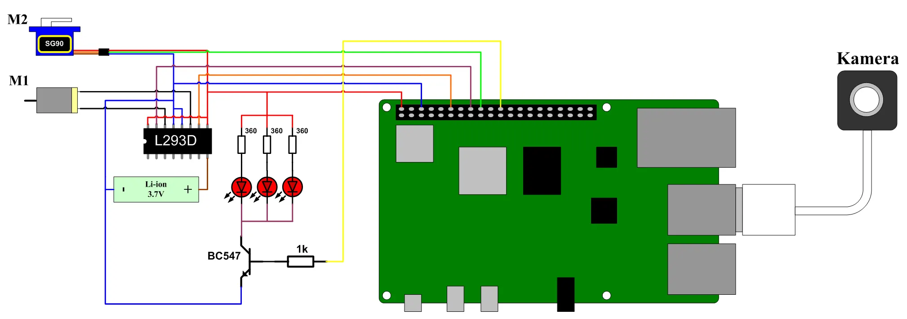
Das Gehirn des Autos ist ein Raspberry Pi, und seine Augen sind eine USB Kamera, die das Gesehene an den Raspberry Pi überträgt, welcher basierend auf dem geschriebenen Code entscheidet, ob der Motor eingeschaltet oder gestoppt wird. Da der Motor M1 einen hohen Strom zieht, wurde eine separate Spannungsquelle für den Motor hinzugefügt, während der Servomotor M2 seine Energie direkt vom Raspberry Pi beziehen kann. Zur Steuerung, wann die Batteriespannung an den Motor angelegt wird, musste eine L293D Schaltung verwendet werden, wobei der Minuspol als gemeinsame Masse geschaltet wurde, damit die Schaltung funktioniert. Da die vom Raspberry Pi kommende Spannung von 3,3 Volt sowie der Strom nicht ausreichen, um drei LEDs gleichzeitig zu betreiben, wurde ein NPN Transistor als Schalter hinzugefügt, der eine geeignete Spannung und einen passenden Strom für die LEDs durchlässt, ergänzt durch einen passenden Widerstand für jede LED sowie einen Basiswiderstand am Transistor zur Bestimmung des Stromwerts und zum Schutz des Transistors.
Feuerwehrfahrzeug :
Projektüberblick :
Das Projekt ist ein Auto, das mit einer Kamera ausgestattet ist, die Feuer erkennen kann. Wenn das Auto Feuer sichtet, schaltet es die Notbeleuchtung auf seinem Dach ein und beginnt sich vorwärts zu bewegen. Um sicherzustellen, dass das Auto nicht direkt in das Feuer fährt, wurde ein Infrarotsensor hinzugefügt, der das Auto stoppt, sobald es sich dem Feuer nähert, während die Bremslichter eingeschaltet werden. Gleichzeitig wird Wasser in Form von Sprühnebel um das Feuer herum gepumpt, um den Sauerstoff abzuschneiden und das Feuer zu löschen, während das Auto eine E-Mail sendet, dass ein Feuer erkannt wurde.
Mechanischer Aufbau :
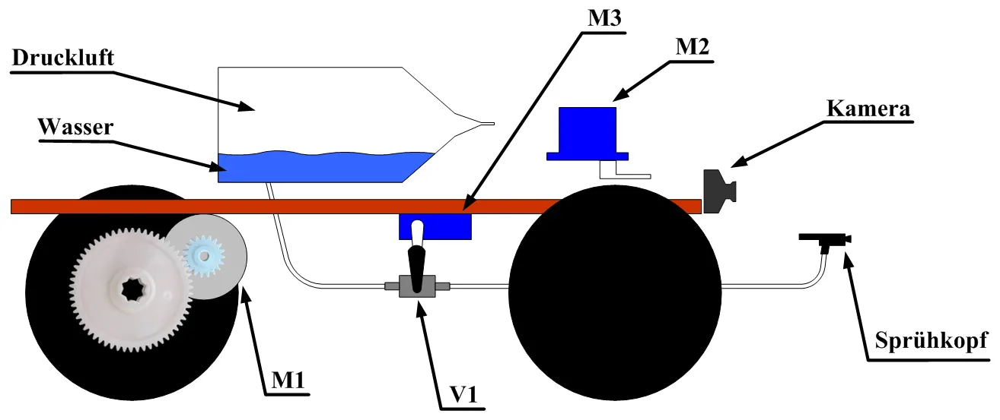
Es gibt zwei Motoren und einen Getriebesatz zum Bewegen und Lenken des Autos an den richtigen Ort; der Gleichstrommotor M1 bewegt das Auto vorwärts und rückwärts, während der Servomotor M2 es nach rechts und links lenkt. Darüber hinaus gibt es ein Wasserdampf beziehungsweise Wasserdrucksystem, das aus einem Tank besteht, der zur Hälfte mit Wasser und zur anderen Hälfte mit Druckluft gefüllt ist, unterstützt durch einen alten Kühlschrankkompressor. Am Boden des Tanks befindet sich ein hochdruckbeständiger Plastikschlauch, an dessen Ende ein Parfümflaschenkopf angebracht ist, um das Wasser in Sprühnebel umzuwandeln. Zur Steuerung des Wasseraustritts ist ein Ventil V1 installiert, das von einem Servomotor M3 gesteuert wird. Das Wasserpumpsystem ist vollständig von der elektrischen Schaltung isoliert, um deren Beschädigung im Falle eines Lecks zu verhindern.
Elektrische Steuerung :
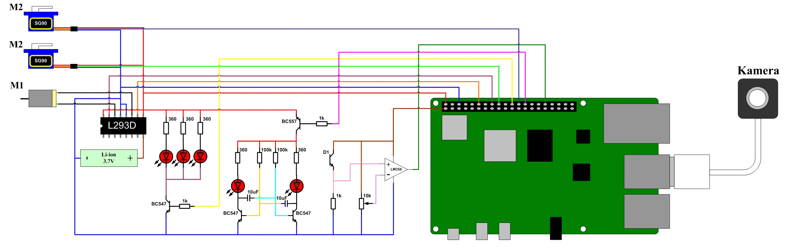
Die Kamera erfasst das Feuer und übermittelt die Informationen an den Raspberry Pi, welcher die Notbeleuchtung mithilfe eines PNP Transistors und einer astabilen Kippstufe einschaltet, die aus zwei Transistoren, zwei Widerständen und zwei Kondensatoren mit sehr präzisen Werten besteht, um die Lampen jede halbe Sekunde ein und auszuschalten. Das System zur Erkennung der Nähe des Feuers zum Auto besteht aus einem Infrarotsensor und einem LM358 Komparator, der das vom Sensor kommende Signal mit einem über einen variablen Widerstand ausgewählten Signal vergleicht, wodurch die Empfindlichkeit gesteuert werden kann, der Komparator arbeitet hier im Sättigungsbereich, da der Raspberry Pi keinen analogen Eingang besitzt. Da der Automotor einen hohen Strom zieht, musste eine L293D Schaltung und eine separate Spannungsquelle installiert werden, wobei sichergestellt werden muss, dass die gesamte Schaltung eine gemeinsame Masse besitzt, um einen ordnungsgemäßen Betrieb zu gewährleisten.
Fahrzeug mit Echtzeitsteurung :
Projektüberblick :
Das Projekt ist ein ferngesteuertes Auto mit einer realistischen Steuerung, die die Bedienung von Blinkern, Abblendlicht und Fernlicht, rotem Rücklicht sowie Bremslichtern ermöglicht, zusätzlich zu weißen Lichtern beim Rückwärtsfahren. Die Richtung des Autos kann über ein echtes Lenkrad gesteuert werden, während für die Bewegung ein Gaspedal, eine Kupplung und ein Gangschalthebel verwendet werden, da das Auto jedoch keine echte Kupplung oder tatsächliches Getriebe besitzt, werden diese im Code simuliert. Darüber hinaus wurde eine RGB LED hinzugefügt, um den Verbindungsstatus mit dem Steuergerät anzuzeigen. Bei erfolgreicher Verbindung leuchtet sie grün, bei getrennter Verbindung rot und während der Suche nach dem Auto gelb.
Mechanischer Aufbau :
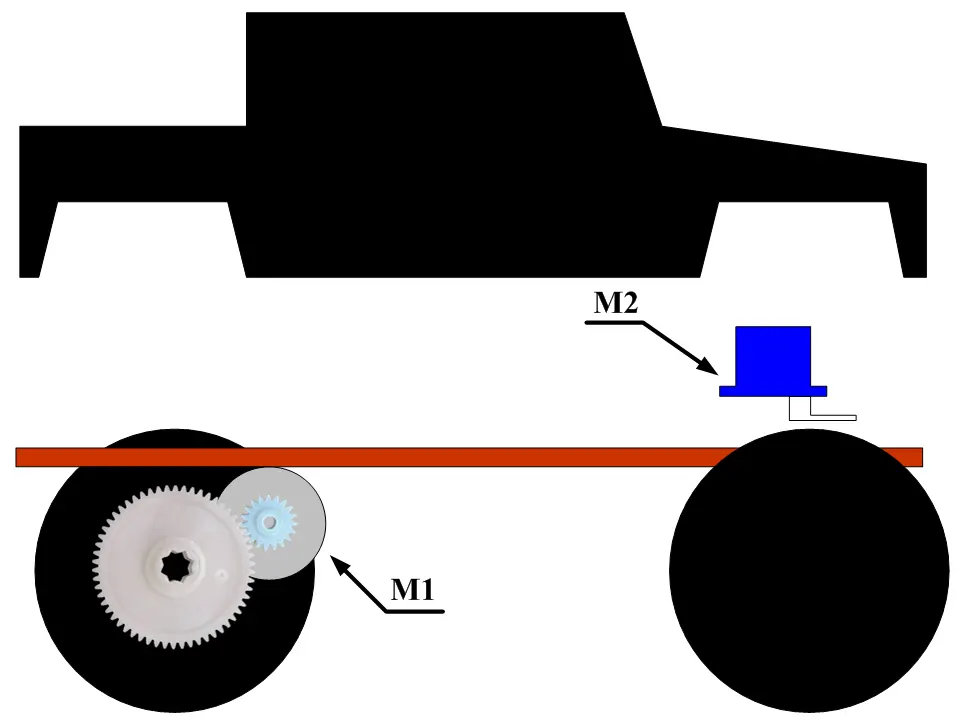
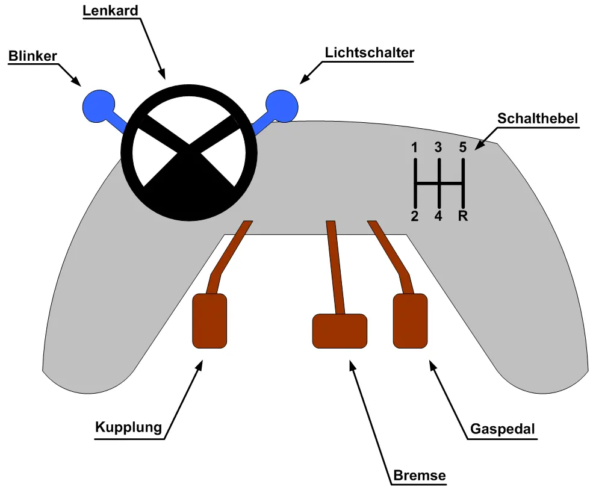
Das Auto enthält einen Gleichstrommotor für den Antrieb und einen Servomotor für die Lenkung nach rechts und links. Das Steuergerät ist handgefertigt und basiert auf einem alten PlayStation Controller, dem Holpedale, ein Plastiklenkrad, ein Schalthebel und verschiedene Tasten zur Lichtsteuerung hinzugefügt wurden.
Elektrische Steuerung :
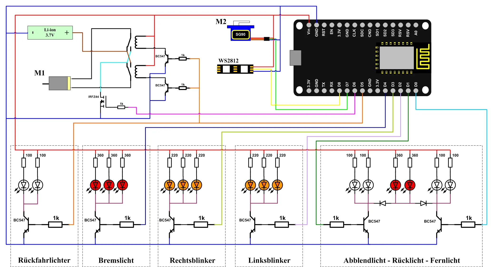
Die Steuerung der Fahrzeugkomponenten erfolgt über einen ESP8266 Mikrocontroller. Es wurden LEDs verschiedener Farben und Anzahl verwendet, um ein echtes Auto zu simulieren, ergänzt durch einen NPN Transistor, da die Lampen eine höhere Spannung und einen höheren Strom benötigen, als der ESP8266 bereitstellen kann. Für den Antrieb des Autos werden ein Gleichstrommotor und eine externe Spannungsquelle in Form einer Lithiumbatterie eingesetzt, um nicht nur ein einfaches Ein und Ausschalten zu ermöglichen, sondern auch die Geschwindigkeit und Richtung zu steuern, musste eine Pulsweitenmodulation verwendet werden. Durch Anpassung des Tastgrades kann die Geschwindigkeit von null bis zur Höchstgeschwindigkeit geändert werden, da die Drehzahl des Gleichstrommotors proportional zur Spannung ist. Das PWM Signal geht an das Gate eines MOSFETs, wobei ein N-Channel MOSFET verwendet wurde, da dieser bei hohen Frequenzen arbeiten kann und im Vergleich zu einem BJT Transistor einen geringen Innenwiderstand aufweist. Zur Steuerung der Drehrichtung des Motors wurden zwei Relais eingesetzt, um die Polung des Motors zu vertreiben, während dasselbe Kabel, das das Relais schaltet, gleichzeitig die weißen Rückfahrlichter einschaltet.
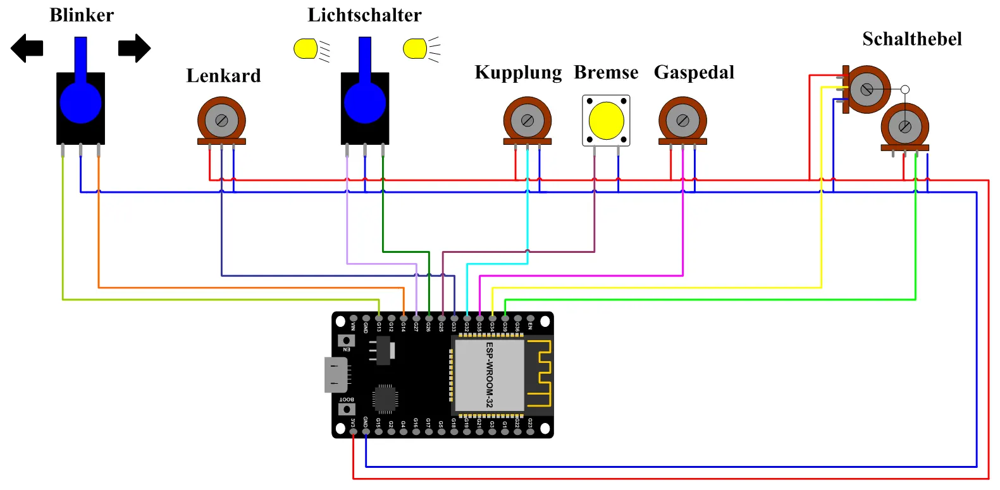
Für die Fernsteuerung des Autos wird ein ESP32 benötigt, im Gegensatz zum ESP8266, der nur wenige Ein und Ausgänge sowie einen einzigen analogen Eingang besitzt, verfügt der ESP32 über mehr Ein und Ausgänge und insbesondere analoge Eingänge, und es gibt sogar zwei analoge Ausgänge, die in diesem Projekt jedoch nicht benötigt werden. Die analogen Eingänge werden für das Lenkrad, die Kupplung, das Gaspedal und den Schalthebel verwendet, da deren Werte in einem Bereich von 0 bis 4095 variieren, im Gegensatz dazu werden die Bremstaste und die Lichtschalter an digitale Eingänge angeschlossen, um nur den Wert 0 oder 1 zu senden.
Ferngesteuerter Zug :
Projektüberblick :
Dieses Projekt ist ein Zug, der mithilfe eines anderen Projekts hergestellt wurde, nämlich einer präzisen und schnellen CNC Maschine. Der Zug wird hinsichtlich seiner Geschwindigkeit und Richtung ferngesteuert, zusätzlich zu der Möglichkeit, die vorderen und hinteren Lichter einzuschalten.
Mechanischer Aufbau :
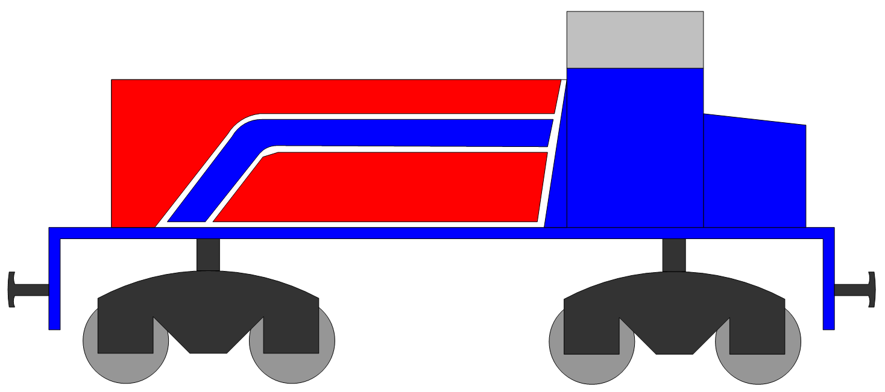
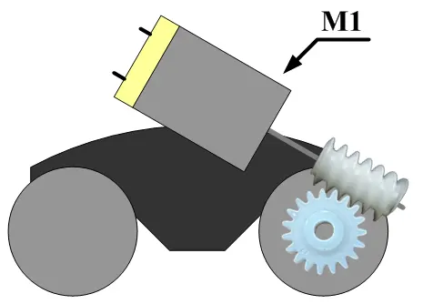
Für den Antrieb des Zuges wurden ein Gleichstrommotor sowie ein Schneckengetriebe und ein Zahnrad installiert, um eine Drehmomentverstärkung zu gewährleisten, da der Platz begrenzt ist und ein kleiner Motor verwendet wurde. Zwischen dem Drehgestell und dem Zug besteht ein rotatorischer Freiheitsgrad, da das Gleis nicht ideal ist und sich das Drehgestell in Kurven frei drehen muss. Die Räder wurden nach dem Vorbild echter Züge hergestellt, um zu verhindern, dass sie aus dem Gleis springen.
Elektrische Steuerung :
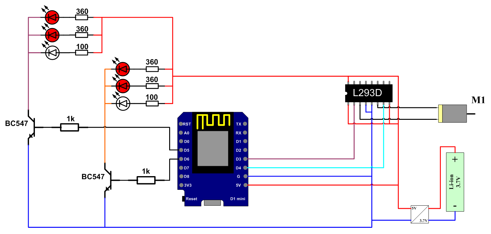
Zur Steuerung der Zugteile wurde eine Steuereinheit benötigt, und da weder der ESP32 noch der ESP8266 aufgrund des begrenzten Platzes verwendet werden konnten, wurde ein ESP8266 D1 Mini eingesetzt, der denselben Mikrocontroller wie der ESP8266 enthält, jedoch eine deutlich kleinere Bauform aufweist. Die Beleuchtung besteht aus zwei Gruppen, von denen jede eine weiße Lampe und zwei rote Lampen enthält, die weiße Lampe wird auf einer Seite platziert und die beiden roten Lampen auf der gegenüberliegenden Seite, ebenso bei der anderen Gruppe. Für den Antrieb des Motors wurde eine L293D Schaltung verwendet, während die Lampen einen NPN Transistor zu ihrem Betrieb benötigen. Zum Betrieb des Systems wurde eine Standard Lithiumbatterie verwendet, deren Spannung bei voller Ladung 4.2 Volt beträgt, da dieser Wert für einen stabilen Betrieb nicht optimal ist, wurde ein aus einem alten Gerät ausgebauter Spannungswandler eingesetzt, um die Spannung auf 5 Volt zu erhöhen, damit der ESP8266 D1 Mini einwandfrei arbeiten kann.
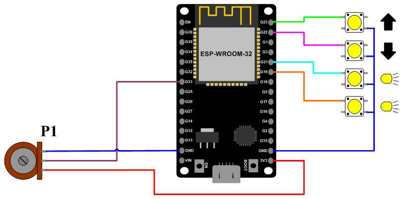
Das Steuergerät enthält einen Hebel ähnlich dem in echten Zügen zur Geschwindigkeitsregelung, und das Bewegen desselben Hebels in die entgegengesetzte Richtung bewirkt die Bremsung, sowie vier Tasten, zwei davon dienen zur Auswahl der Fahrtrichtung und die anderen beiden zur Auswahl der zu betreibenden Lampen.
Metalldetektor :
Projektüberblick :
Das Projekt ist eine Weiterentwicklung eines früheren Hindernisausweichroboters, dem ein Metalldetektionssystem mit einer Reichweite von höchstens zwei Zentimetern hinzugefügt wurde. Das Fahrzeug fährt normal, und bei der Entdeckung von Metall stoppt es, fährt ein Stück zurück, gibt einen Warnton aus und schaltet ein rotes Licht ein, während auf dem Display angezeigt wird, dass Metall entdeckt wurde.
Mechanischer Aufbau :
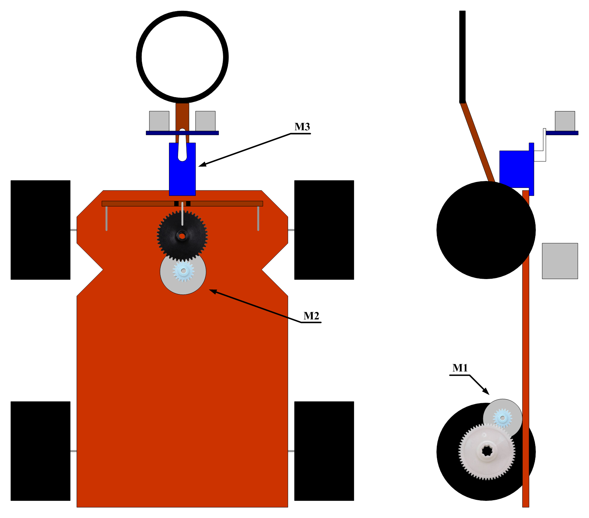
Das Projekt enthält drei Motoren, zwei Gleichstrommotoren M1 und M2 zum Bewegen und Lenken des Autos sowie einen dritten Servomotor M3, der den Ultraschallsensor bewegt, um die Umgebung zu scannen und Hindernisse zu erkennen.
Elektrische Steuerung :
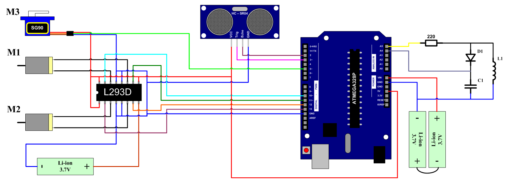
Das Projekt enthält einen Gleichstrommotor M1 zum Vorwärts und Rückwärtsbewegen des Autos, einen Gleichstrommotor M2 mit einem Getriebesystem zum Lenken des Autos nach rechts und links sowie einen dritten Motor M3 zum Bewegen des Ultraschallsensors, zusätzlich zu dem Metalldetektionssystem, das auf einer Spule und einem Kondensator basiert, wobei der Arduino einen intermittierenden Strom in die Schaltung einspeist und die Frequenz überwacht. Wenn sich Metall der Spule nähert, werden Wirbelströme im Metall erzeugt und die Induktivität der Spule verändert sich, wodurch sich die Frequenz ändert, da ihr Wert mit den Werten des Kondensators und der Spule zusammenhängt. Bei einer Frequenzänderung erkennt der Arduino, dass sich Metall in der Nähe der Spule befindet.
Hindernisdetektor :
Projektüberblick :
Dieses Projekt ist ein Prototyp eines Hindernisausweichroboters, der sich vorwärts und rückwärts bewegen und Hindernisse dank eines Ultraschallsensors erkennen kann, der eine maximale Entfernung von vier Metern messen kann. Damit der Robot weiß, wohin er sich bei der Erkennung eines Hindernisses drehen soll, dreht er nur den Sensor nach rechts und misst die Entfernung, dreht ihn dann nach links und misst ebenfalls die Entfernung, vergleicht anschließend beide Entfernungen und dreht sich in die Richtung, deren Entfernung größer ist.
Mechanischer Aufbau :
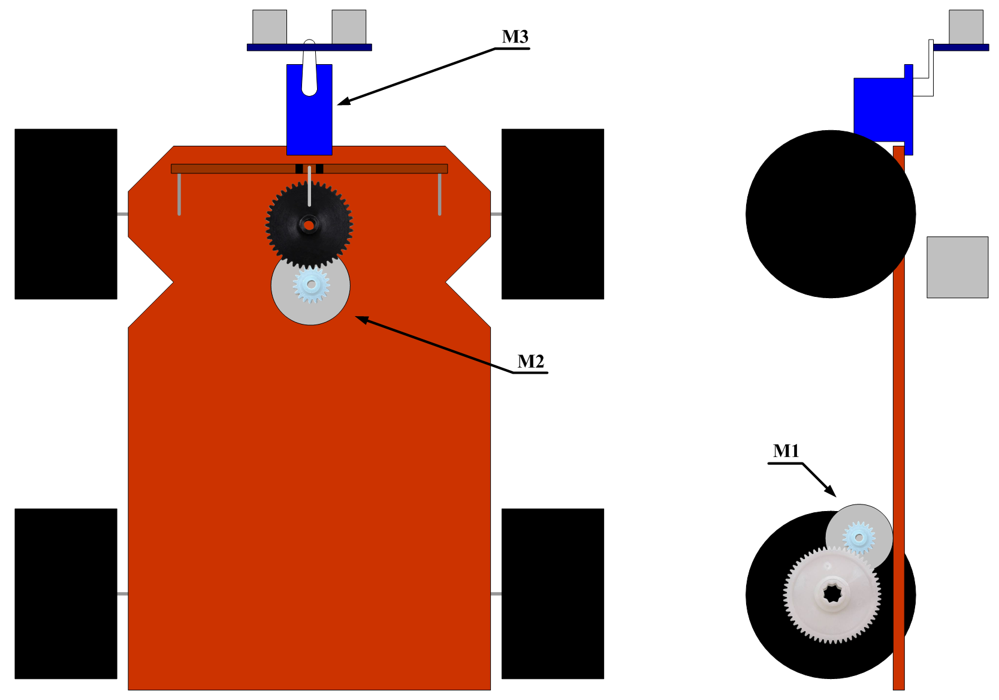
Der Roboter verfügt über zwei Gleichstrommotoren, den Motor M1 zum Vorwärts und Rückwärtsbewegen und den Motor M2 zum Lenken nach rechts und links, sowie einen Servomotor M3 zum Bewegen des Sensors, der die Entfernung misst. Das Lenksystem ist vollständig handgefertigt und umfasst ein Getriebesystem zur Erhöhung des Drehmoments sowie eine Feder, die die Räder automatisch wieder in eine gerade Position zurückführt.
Elektrische Steuerung :
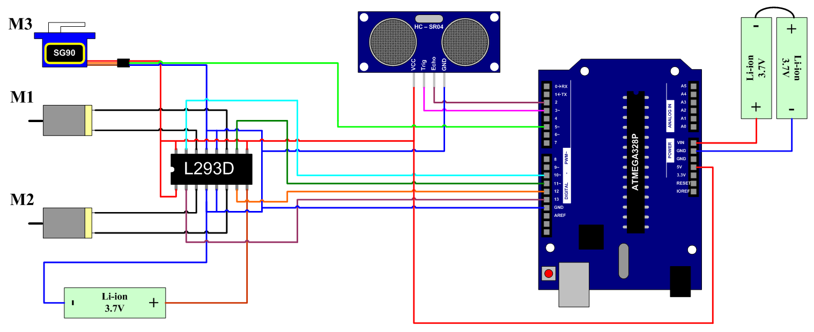
Das Gehirn des Roboters ist ein Arduino Uno, zur Steuerung der beiden Gleichstrommotoren M1 und M2 musste die Schaltung L293D verwendet werden, die in der Lage ist, zwei Motoren gleichzeitig so zu betreiben, dass sie voneinander isoliert sind, und ihre Stromversorgung erfolgt durch eine Lithiumbatterie. Der Servomotor M3 wird direkt vom Arduino versorgt und über Pulsweitenmodulation gesteuert. Der Ultraschallsensor enthält einen Draht für den Sender und einen Draht für den Empfänger, der Arduino sendet einen Impuls, woraufhin der Sensor eine Ultraschallwelle aussendet, und wenn diese auf ein Hindernis prallt und zurückkehrt, wird sie vom Empfänger des Sensors erkannt, der ein Signal an den Arduino sendet, welcher die Zeit zwischen dem Senden des Impulses und seiner Rückkehr misst. Mit einer einfachen Formel unter Verwendung der Schallgeschwindigkeit wird die Zeit in eine Entfernung umgewandelt und dann durch zwei geteilt, da die Welle hin und her gegangen ist, was bedeutet, dass sie die Strecke zweimal zurückgelegt hat.